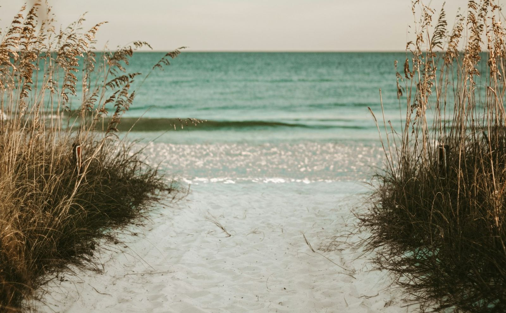

Independent public record project. Sources linked throughout. Last reviewed October 2026.

Customary Use
What the cases and the settlement say, and what they do not say.
This page gathers the customary-use facts already on the Timeline and on Beach Access Today. The recorded votes stay on the Timeline.
1974: Tona-Rama
March 25, 1974. Rehearing denied May 30, 1974. City of Daytona Beach v. Tona-Rama, 294 So. 2d 73.
Held
If recreational use of the sandy area next to mean high tide has been ancient, reasonable, without interruption, and free from dispute, the owner should not interfere with that use. Customary use does not create an interest in the land itself. The owner may still use the property in ways consistent with that public use. The court ordered judgment for the tower owner.
Did not hold
This case is not a statewide grant of dry sand.
City of Daytona Beach v. Tona-Rama
The 2017 ordinance
Ordinance 2017-10 recognized customary use of dry sand on county beaches, with a 15-foot buffer seaward of the dune toe or a permanent habitable structure. The First DCA describes Walton County Code section 23-2 (March 28, 2017) the same way for all county beaches.
Uses listed for that 2017 ordinance in this record: traversing, sitting, umbrellas 7 feet or less in diameter, sunbathing, picnicking, fishing, swimming or surfing, beach equipment, and sand creations. This is the 2017 ordinance. It is not the current public rule.
At oral argument in 2026 the county could not say whether the ordinance was revived. That comment is the county's comment. It is not the holding.
March 28, 2017 on the Timeline
The 2018 statute
Section 163.035 took effect July 1, 2018. A local government could not adopt or keep a customary-use ordinance for beach above the mean high-water line unless a court had already affirmed that use. Ordinances in effect on or before January 1, 2016 were exempt, so Walton's 2017 ordinance was not grandfathered.
July 1, 2018 on the Timeline
On a parcel that signed the 2023 settlement
Settlement rights supersede any customary use that could exist on those parcels. Customary use on a settling parcel is "now and forevermore moot." Only owners who signed. This page does not list signers.
Settlement terms
The February 2024 judgment
The circuit court entered a final judgment under section 163.035. It affirmed a limited customary-use right on the dry sand of the parcels still in the case. This page does not state that judgment as still in effect.
February 2024 on the Timeline
What the 2026 appeal did not say
The First DCA held that, because section 163.035 was repealed, the February 2024 judgment has no more legal effect. It did not hold whether customary use was proved. It did not say customary use disappeared. It did not decide the 2023 settlement. It did not declare the beaches private.
The county said at oral argument that its posture was "square one," and that it could not say whether the 2017 ordinance was revived. That comment is the county's comment. It is not the holding.
February 18, 2026 on the Timeline